Diagnostic follow-up of WL104K. WL104K's frozen verdict and appended post hoc section are unchanged. A / T / P = shared ER-v1-GF / one shared symmetric gate / per-component symmetric gates. Physical reference: WL104D layered angular reference and fresh layered walks at the scenes' own first-bounce directions; scene images from the fixed common-proposal replay.
| optimization_qualification | FAIL |
| rule_a_fraction | {"A": 1.0, "T": 1.0, "P": 0.8333333333333334} |
| angular_stability | STABLE |
| wl104k_gain_criteria_on_extended_states_descriptive | true |
| extended_state_contracts_passed | true |
| lane_correspondence | {"test83_iid_1_L2": true, "test83_hard_1_L1": true, "test83_iid_159_L2": true} |
| attribution_labels | {"test83_iid_1_L2": {"objects": "MIXED", "sphere": "MIXED", "cube": "ANGULAR_RESPONSE_OVERSHOOT", "highlight_core": "ANGULAR_RESPONSE_OVERSHOOT", "highlight_ring": "MIXED", "grazing": "ANGULAR_RESPONSE_OVERSHOOT", "sphere_lower": "MIXED"}, "test83_hard_1_L1": {"objects": "MIXED", "sphere": "MIXED", "cube": "ANGULAR_RESPONSE_OVERSHOOT", "highlight_core": "MIXED", "highlight_ring": "ANGULAR_RESPONSE_OVERSHOOT", "grazing": "ANGULAR_RESPONSE_OVERSHOOT", "sphere_lower": "ANGULAR_RESPONSE_OVERSHOOT"}, "test83_iid_159_L2": {"objects": "MIXED", "sphere": "MIXED", "cube": "MIXED", "highlight_core": "MIXED", "highlight_ring": "ANGULAR_RESPONSE_OVERSHOOT", "grazing": "NOISE_COMPATIBLE", "sphere_lower": "ANGULAR_RESPONSE_OVERSHOOT"}} |
| integration_work_justified | UNRESOLVED |
| adoption_readiness | NOT_READY (gated-response sampler / pdf not designed; experiment-local evaluator only; owner decision) |
| scene | 12k E1 | 12k E2 | 12k total | ext E1 | ext E2 | ext total |
|---|---|---|---|---|---|---|
| iid_1 scene | STABLE_IMPROVEMENT | STABLE_IMPROVEMENT | STABLE_IMPROVEMENT | STABLE_IMPROVEMENT | STABLE_IMPROVEMENT | STABLE_IMPROVEMENT |
| hard_1 scene | MIXED | STABLE_IMPROVEMENT | MIXED | MIXED | STABLE_IMPROVEMENT | MIXED |
| iid_159 scene (held out) | STABLE_IMPROVEMENT | STABLE_IMPROVEMENT | STABLE_IMPROVEMENT | STABLE_IMPROVEMENT | STABLE_IMPROVEMENT | STABLE_IMPROVEMENT |
Question: Does a matched extension close the optimization of A / T / P?
Training curves, rule (a) and projected-gradient stationarity. Source: ext/fit.json, WL104K fit_primary/fit.json
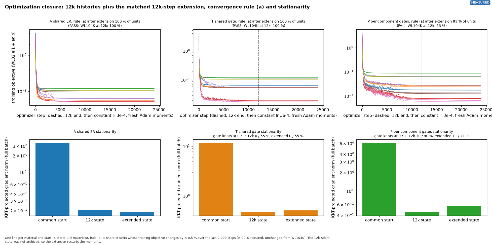
Question: Is the angular and scene advantage stable across starts?
Angular el1 per start; scene P − A per start with jackknife intervals. Source: ext_angular.json, decision.json
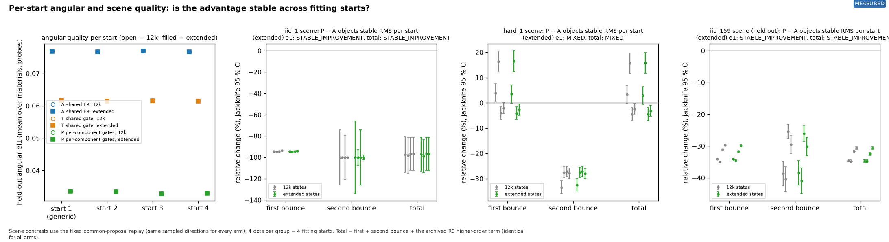
Question: Does the image error of iid_1 scene come from the angular response at the directions the image uses?
Top: lane-level response residual at the scene's own first-bounce directions (start-mean); bottom: rendered residual. Source: lanes/<scene>/maps.npz
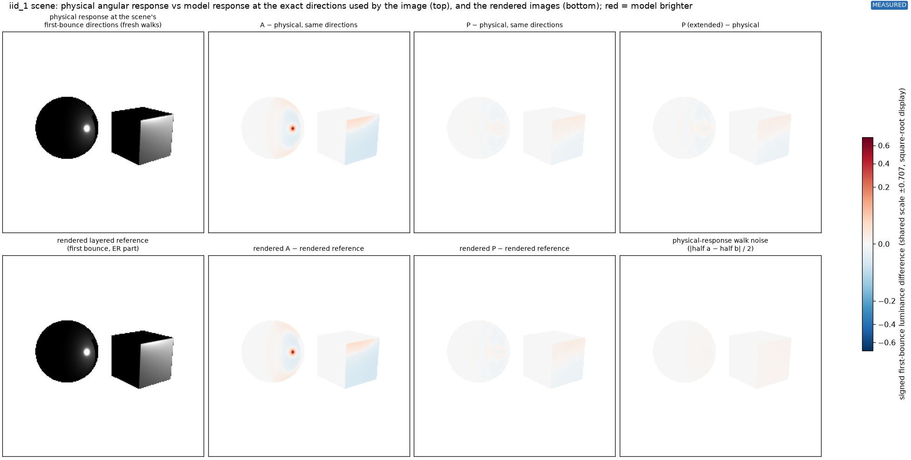
Question: Does the image error of hard_1 scene come from the angular response at the directions the image uses?
Top: lane-level response residual at the scene's own first-bounce directions (start-mean); bottom: rendered residual. Source: lanes/<scene>/maps.npz
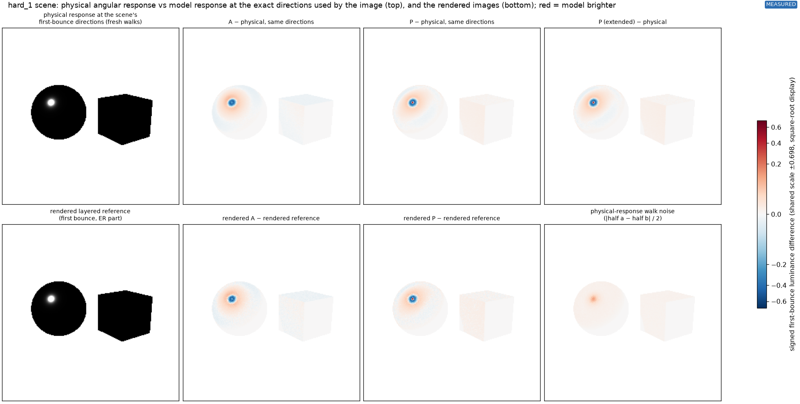
Question: Does the image error of iid_159 scene (held out) come from the angular response at the directions the image uses?
Top: lane-level response residual at the scene's own first-bounce directions (start-mean); bottom: rendered residual. Source: lanes/<scene>/maps.npz
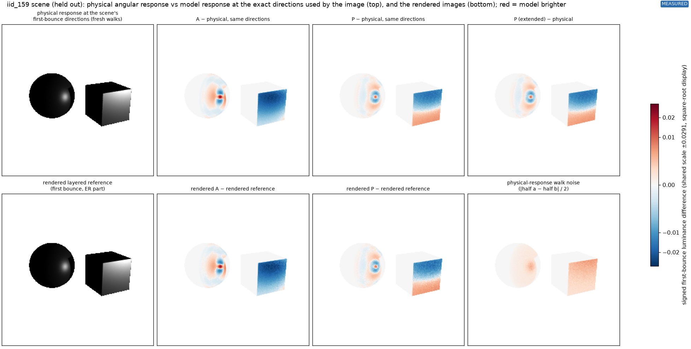
Question: Is the hard_1 highlight overshoot an angular-response error, noise or start-dependent?
Signed excess per region, arm, start. Source: lanes/<scene>/attribution.json
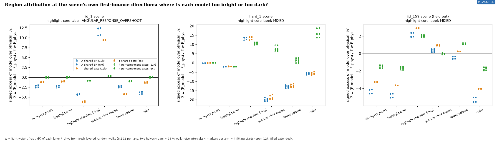
Question: Is the overshoot concentrated at specific near-mirror directions?
Binned signed excess vs mirror offset at the scene's own directions. Source: lanes/<scene>/attribution.json
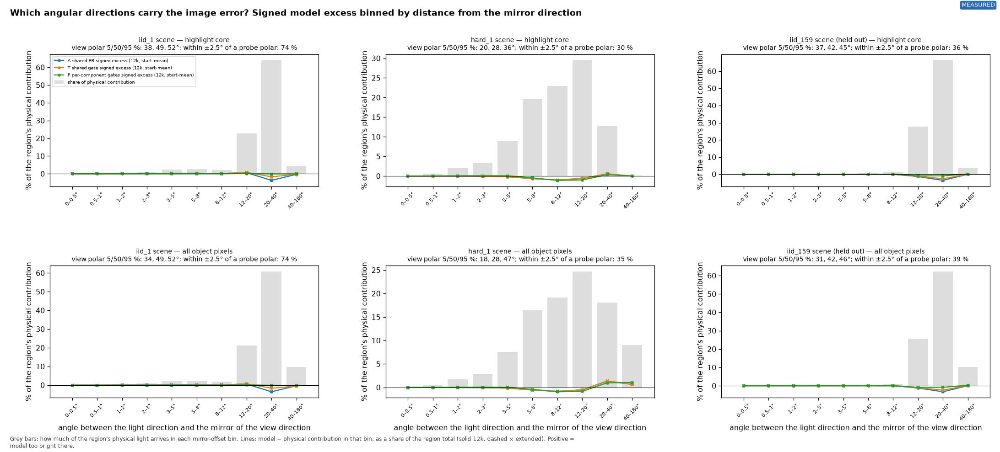
Question: Which event carries each scene's change?
Stable RMS per event. Source: stageA.json
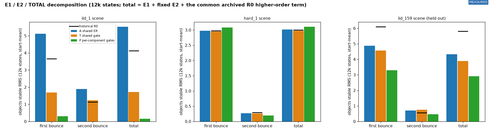
Question: Can noise or start variability explain the observed differences?
Separated uncertainty sources. Source: stageA.json, lanes/*/attribution.json
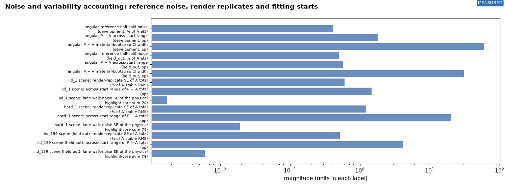
Question: At the exact directions of the hard_1 highlight, is P too bright near the mirror peak?
Per-lane model vs physical contribution; inset: signed excess by mirror offset. Source: lanes/test83_hard_1_L1/lanes.npz
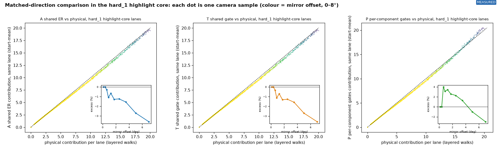
Question: Why does hard_1's image error rise while its angular error falls?
Squared-error change concentrated in a few highlight-peak pixels; per-start peak height on the independent peak grid. Source: descriptive.json (descriptive104ka.py).
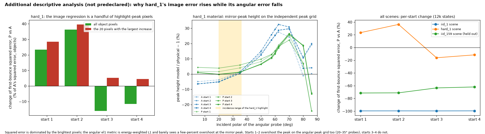